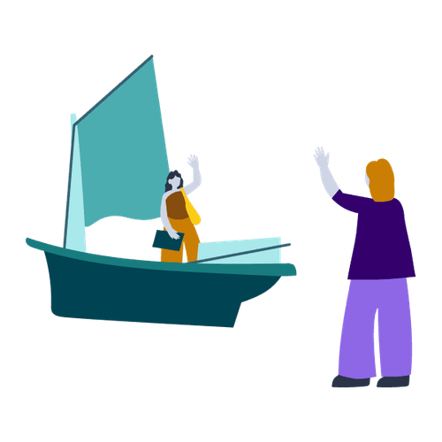

Many of Lufthansa Technik’s 4,500 employees were stuck in endless meetings. With 9 Spaces, they began building a more effective meeting culture.
Explore six non-awkward formats, methodsand exercises that help bring teams closer together.

Ensure a smooth handover and show genuine appreciation with a well-structured exit interview.
Build a habit of continuously clarifying and adjusting roles and rules for efficient, transparent collaboration.
Create a simple system for capturing & sharing expertise.
Ask for help in a way that gets results.